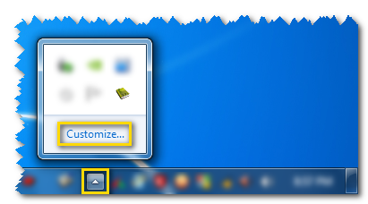
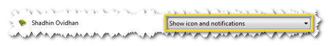

ট্রে আইকন সবসময় দেখানো (উইন্ডোজ ভিস্তা এবং তদূর্ধ্ব ব্যবহারকারীদের জন্য)
যদি স্বাধীন অভিধানের আইকনটি সিস্টেম ট্রেতে অদৃশ্য হয়ে থাকে, তাহলে আইকনটি সিস্টেম ট্রেতে দৃশ্যমান করাতে নিচের ধাপ গুলো অনুসরণ করুনঃ

- প্রথমে সিস্টেম ট্রের পাশে উল্টা ইংরেজি V (^) এর মত চিহ্নটিতে ক্লিক করে Customize… লেখাতে ক্লিক করুন।

- এবার যে উইন্ডো আসবে সেখান থেকে Shadhin Ovidhan কে খুঁজে বের করুন

- এবার Shadhin Ovidhan এর পাশে Only show notifications বা Hide icon and notifications লেখা ড্রপ ডাউন বক্সে ক্লিক করে Show icon and notifications এ ক্লিক করে OK দিয়ে বের হয়ে আসুন। তাহলে স্বাধীন অভিধান চালু থাকা অবস্থায় এর আইকন সিস্টেম ট্রেতে আর অদৃশ্য হয়ে যাবে না।
← ইন্টারফেস এবং বৈশিষ্ট্য সমূহ তে ফিরে যান